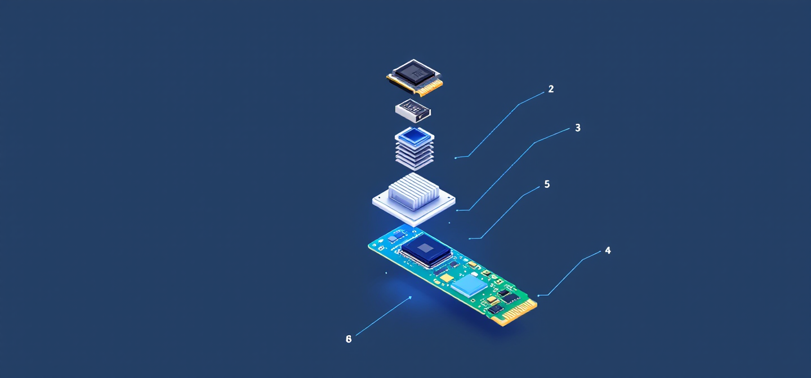
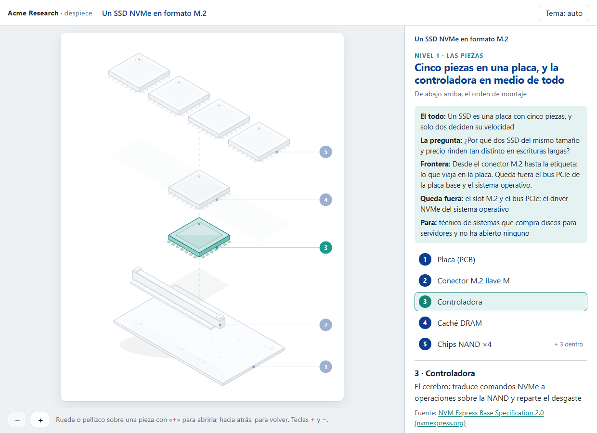
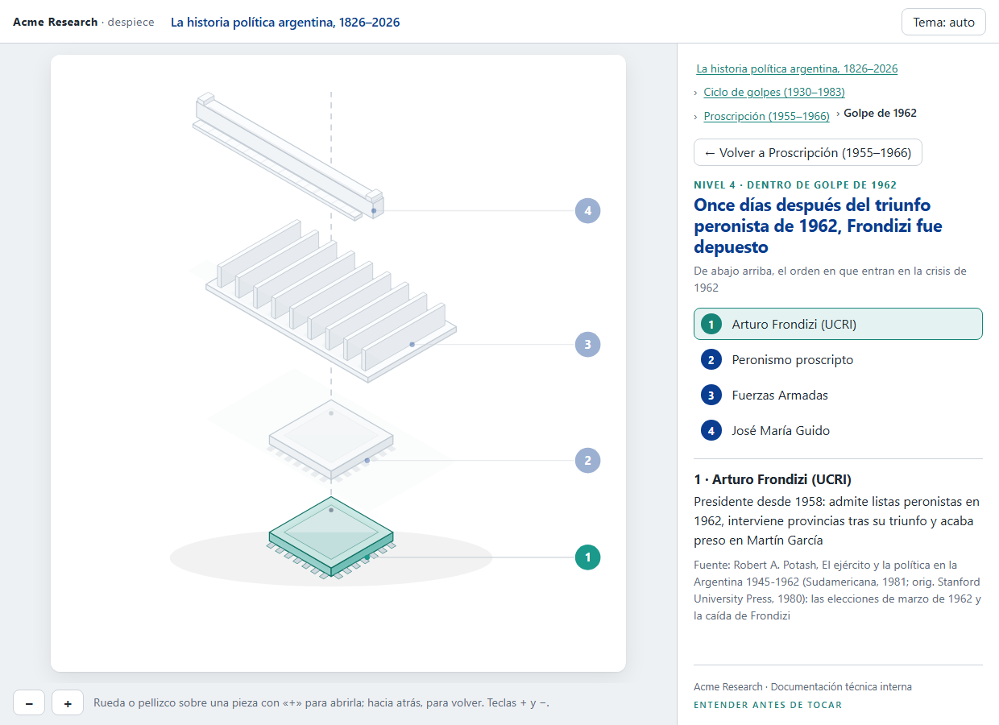
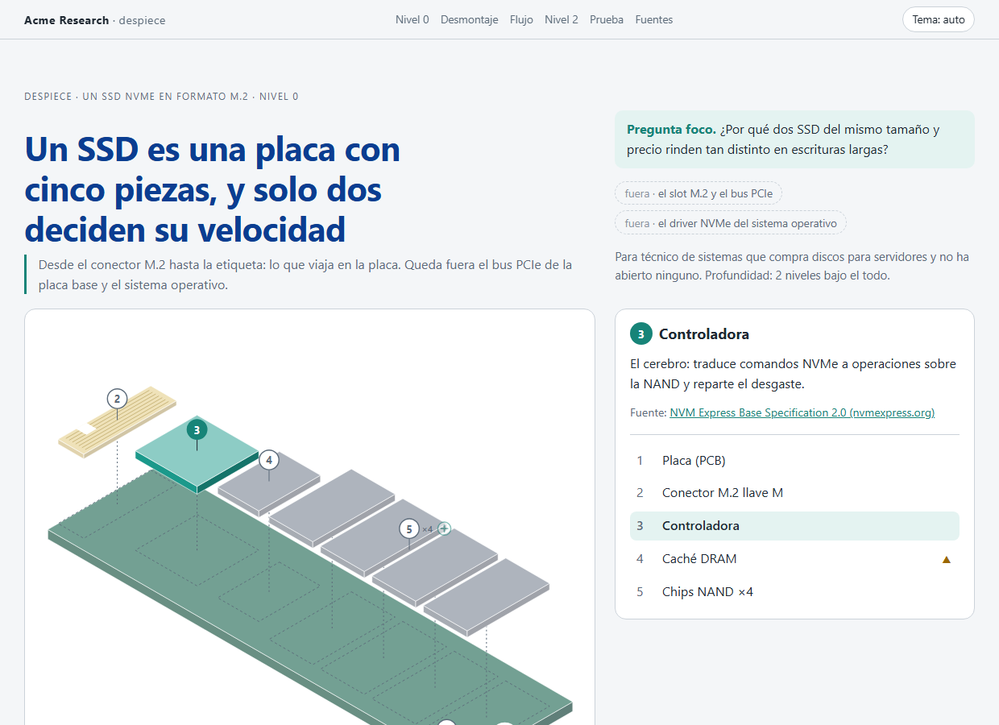
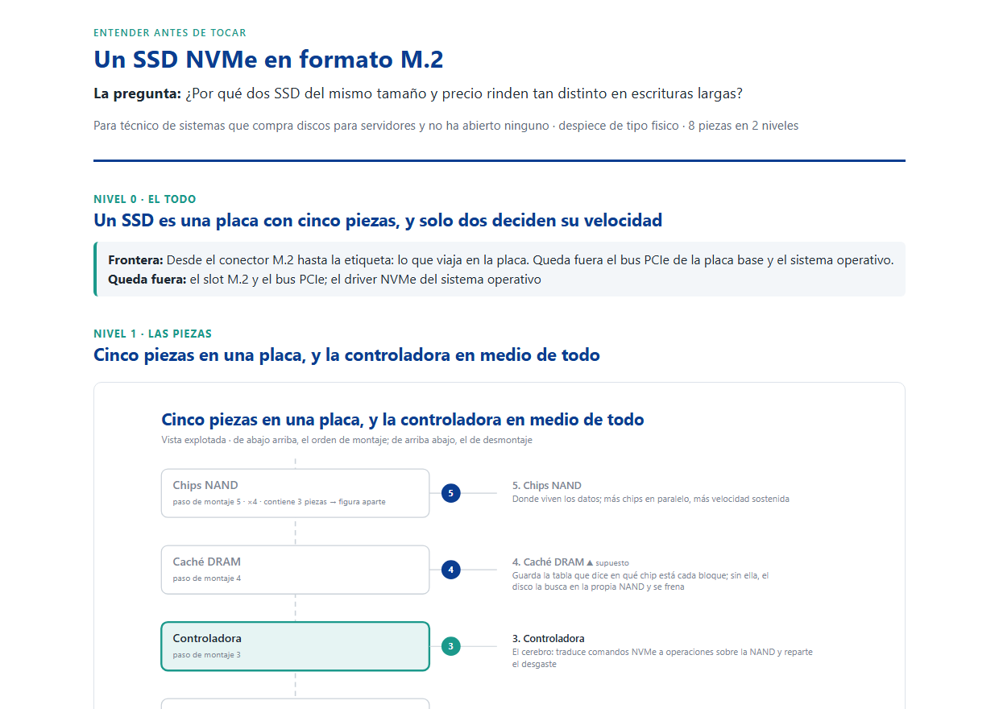

Una skill de Claude Code
despiece
Desarma cualquier cosa para que la entiendas (un aparato, una red, un proceso, una historia o una idea) y te la explica por niveles: las piezas con su función y su fuente, una vista explotada por nivel y dos pruebas para comprobar que lo entendiste.

Probalo en el navegador
-

El SSD, con zoom
Acercate con la rueda o el pellizco a una pieza con «+» y se abre en su lámina; alejate y volvés. Dos niveles.
-

La historia política argentina, con zoom
Cuatro niveles, del todo al golpe de 1962, con la fuente de cada dato.
-

El SSD, que se desarma con el scroll
Se arma al cargar, se desmonta pieza a pieza y sigue el flujo paso a paso.
-

La explicación en una página
La salida por defecto: todos los niveles en una página, que sirve también para imprimir o pasar a PDF.
Las demos llevan una marca de ejemplo, Acme Research, que no existe. Cada página es un solo fichero HTML, sin dependencias: lo que ves es lo que genera la skill.